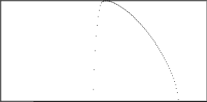
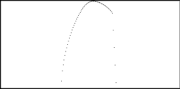
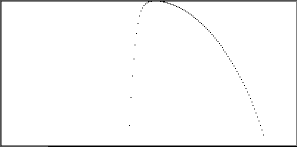
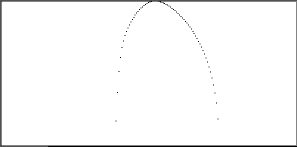
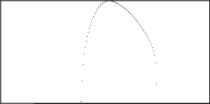

| As an example, we collect time series of daily closing prices of six stocks, |
| AIVSX (Investment company of America), APPL (Apple), CSCO (Cisco), GE, IBM, and INTC (Intel) |
| All data go to June 8, 2005, and have these starting dates |
| AIVSX | June 3, 1996 | 2270 trading days |
| CSCO | March 26, 1990 | 3834 trading days |
| INTC | July 9, 1986 | 4774 trading days |
| APPL | Sept 6, 1984 | 5237 trading days |
| IBM | Jan 2, 1962 | 10934 trading days |
| GE | Jan 2, 1962 | 10934 trading days |
|
| The f(α) curves were generated by the method of moments using
our fractal statistics software, with
q ranging from -20 to 20, an α step of 0.01, and a
q step of 0.1. |
| To illustrate this, use the
Intel data. |
| Here are other data sets we use.
APPL,
AIVSX,
IBM,
GE, and
CSCO. |
| In all windows, the horizontal axis (α) ranges from 0 to 2 and the vertical axis (f(α)) ranges
from 0 to 1. |
| For comparison, here are the
time series and the
driven IFS. For
the driven IFS we plot differences using mean-centered bins with first and third bin boundaries one standard deviation above and below the
mean. |
|  |
|
| AIVSX | APPL |
|  |
 |
| CSCO | GE |
|  |
 |
| IBM | INTC |
|
| Finally, here are the observed α ranges. |
| AIVSX | .90 <= α <= 1.73 | APPL | .87 <= α <= 1.11 |
| CSCO | .68 <= α <= 1.29 | GE | .87 <= α <= 1.78 |
| IBM | .78 <= α <= 1.47 | INTC | .77 <= α <= 1.50 |
|